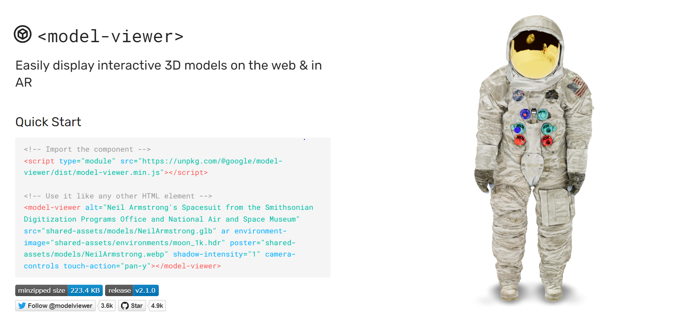
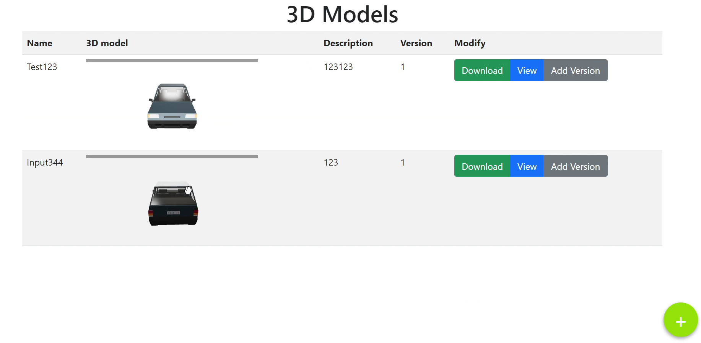
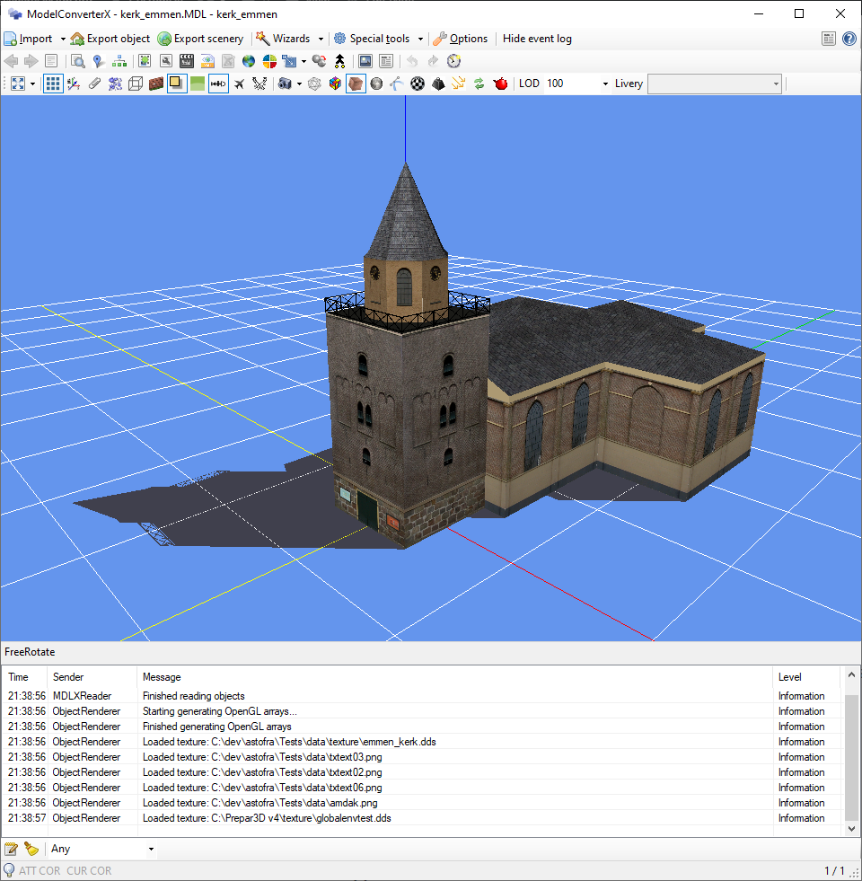
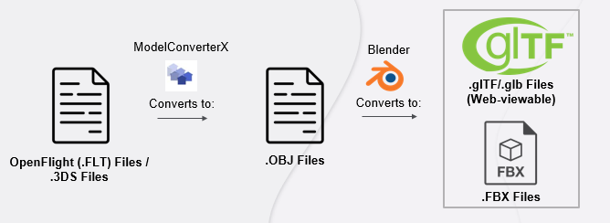
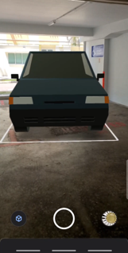
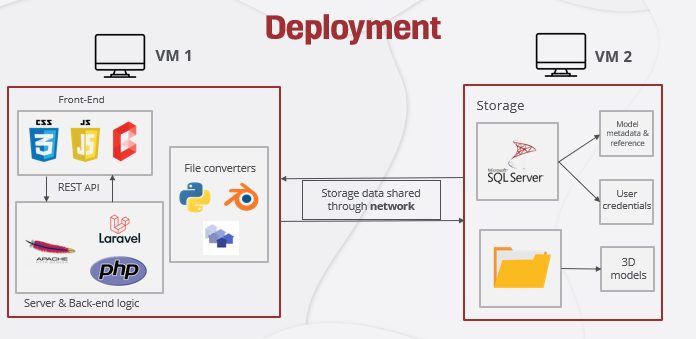

Project summary: DSTA required a consolidated 3D model repository platform to allow 3D models to be hosted, shared and interacted with, in order to improve the productivity of the organisation.
At the start, this project definitely seemed stressful for someone who hadn't done web development before. I had to decide how to store, display and share the 3D models, and features like these were must-haves for the project to succeed:
- User authentication
- Augmented Reality (AR) view
- File conversion
To begin, I decided to find the best modules, libraries and languages to use for the project. I stumbled upon modelviewer.dev, a module created by Google that allows displaying of 3D models of .glTF and .GLB format on the web using WebGL.

This library was absolutely amazing as it allowed me to easily display the models without having to interfere much with Three.js, which would take more time to learn. Here it is in action, drag to rotate:
I then tinkered with PHP and XAMPP, quickly learnt the basics of them and created a simple web app with the core features like downloading, uploading and displaying the models.

Afterwards, I had to work on creating a 3D file converter. This was honestly the most difficult part of the entire project as there were hardly any resources on it. Furthermore, the format that DSTA uses was OpenFlight (.FLT), which was unconventional and old. I scoured through the internet thoroughly and could only find one piece of software that could do something like this for free: ModelConverterX.

Learning to implement the converting software on the web was easier thanks to the kind users from the forums who assisted me.
Now, I wished that that was it for the file conversion process, but no. You see, MCX only converted OpenFlight files to .OBJ files. The .glTF output didn't work well as it is separated into multiple files, which is not supported by model-viewer. So what I did was use Blender as a Python module to finalise the conversion. The final conversion process looks like this:

I then had to find a web framework to move my project to. As much as it was possible to use raw PHP for everything, a web framework has many out-of-the-box tools like user authentication, which would be a pain to build with PHP alone.
Since I was already using PHP, I chose Laravel as my web framework. It's one of the most popular web frameworks and I found it simple to use. I migrated my code over and implemented features like an admin panel and user authentication.
I implemented other features along the way, such as:
- Zipped file download of multiple models
- Augmented Reality (AR) view
- PDF download of the list of models
- User access rights, where users can only view models of their level
- KML file download
- Cart system

I made use of virtual machines to deploy the web application. One VM acts as the storage VM and the other hosts the web app. This makes it easier to scale technical requirements like storage space or processing speed. The final deployment architecture is seen below:

As much as I want to describe more about my internship experience, it would probably take hours to do so. To finalise my thoughts: was this the most well-done project? No. Was it coded the best way possible? No. Did I learn a lot? Definitely. This internship introduced me not only to technical skills like web development, but also to self-directed learning, which will benefit me as I continue my journey to become a better programmer.